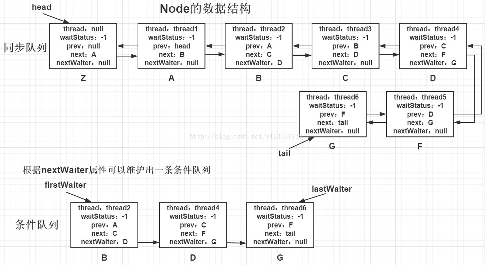

本文详细的介绍了Java中的各种锁概念以及其原理
线程的状态
- NEW（刚刚创建线程）
- RUNNABLE（Ready + Running ，调用start方法为ready，获取到cpu时间片开始执行为running）
- BLOCKED（Synchronized获取锁失败）
- WAITING（wait、join、await、park）
- TIMED_WAITING（带超时时间的方法）
- TERMINATED（线程执行完毕）
创建线程的三种方式
继承 Thread 类
方法一
- 继承 Thread 类并重写 run 方法
- 创建线程对象
- 调用该线程对象的 start() 方法来启动线程
*demo*
1 | class ThreadDemo{ |
方法二
- 当然也可以直接实现内部类，然后重写 run() 方法，然后适当的可以用 lamda 表达式
*demo*
1 | public static void main(String[] args) { |
实现Runnable接口
方法一
- 定义一个类实现 Runnable 接口，并重写该接口的 run() 方法
- 创建 Runnable 实现类的对象，作为创建 Thread 对象的 target 参数，***此 Thread 对象才是真正的线程对象***，这个跟继承 Thread 不一样，第一种方式是直接 Thread 的实现类就是真正的线程对象，而实现 Runnable 接口得对象在这里并不是真正的线程对象。
- 调用线程对象的 start() 方法来启动线程
*demo*
1 | class RunnableDemo { |
方法二
- 直接实现匿名内部类就行了，跟方式一中的方法二一样
*demo*
1 | class RunnableDemo { |
实现 Callable 接口
上述两种方式都有一个缺陷就是：在执行完任务之后无法获取执行结果。于是java后面又增加了 Callable 和 Future，通过它们可以在任务执行完毕之后得到任务执行结果。
Runnable 和 Callable
- Runnable 只是一个接口，里面只是声明了一个run方法，可以看到方法的返回值是void，所以线程执行完了没有任何的返回值。
- Callable 也是一个接口，它里面声明了一个call方法，可以看到它是一个泛型接口，call()函数返回的类型就是传递进来的V类型。线程的执行是异步的，一个线程和另外一个线程的执行是互不干扰的，所以你不可能从别的线程中获得返回值，所以要想获得Callable的返回值就需要用到Future这个接口，Futrue可以监视目标线程调用call的情况，当你*调用Future的get()方法以获得结果时，当前线程就开始阻塞，直到call方法结束返回结果。*
- 总而言之，就是三点：
- Runnable 调用 run方法，Callable 调用 call 方法；
- Runnable不能有返回值，但是 Callable可以返回一个Future对象；
- Runnable不可以抛出异常，但是 Callable 可以抛出异常。
Future
Future 就是对于具体的 Runnable 或者 Callable 任务的执行结果进行取消、查询是否完成、获取结果。必要时可以通过get方法获取执行结果，该方法会阻塞直到任务返回结果。
1 | public interface Future<V> { |
下面我们讲解下这五个方法的作用：
cancel方法：用来取消任务，如果取消任务成功则返回true，如果取消任务失败则返回false。参数mayInterruptIfRunning表示是否允许取消正在执行却没有执行完毕的任务，如果设置true，则表示可以取消正在执行过程中的任务。如果任务已经完成，则无论mayInterruptIfRunning为true还是false，此方法肯定返回false，即如果取消已经完成的任务会返回false；如果任务正在执行，若mayInterruptIfRunning设置为true，则返回true，若mayInterruptIfRunning设置为false，则返回false；如果任务还没有执行，则无论mayInterruptIfRunning为true还是false，肯定返回true。
isCancelled方法：表示任务是否被取消成功，如果在任务正常完成前被取消成功，则返回 true
isDone方法：表示任务是否已经完成，若任务完成，则返回true
get()方法：用来获取执行结果，这个方法会产生阻塞，会一直等到任务执行完毕才返回。这里的阻塞需要解释一下，阻塞的是当前调用get方法的线程，直到get方法返回结果才能继续向下执行，如果get方法一直没有返回值，那么当前线程会一直阻塞下去
get(long timeout, TimeUnit unit)方法：获取执行结果，如果在指定时间内，还没获取到结果，就直接返回null，这个就避免了一直获取不到结果使得当前线程一直阻塞的情况发生
也就是说Future提供了三种功能：
1）判断任务是否完成；
2）能够中断任务；
3）能够获取任务执行结果。
因为Future只是一个接口，所以是无法直接用来创建对象使用的，因此就有了下面的 FutureTask。
FutureTask
我们先来看一下 FutureTask 的类图：

可以看出 RunnableFuture 继承了 Runnable 接口和 Future 接口，而 FutureTask 实现了 RunnableFuture 接口。所以它既可以作为 Runnable 被线程执行，又可以作为 Future 得到 Callable 的返回值。
实现
- ExecutorService & Future & Callable
第一种方式是使用继承了ExecutorService的线程池ThreadPoolExecutor中的submit方法，将Callable直接提交创建Future。
demo
1 | class CallableDemo{ |
- ExecutorService & futureTask & Callable
第二种方式就是使用 futureTask，具体看 demo 吧
demo
1 | class CallableDemo { |
- futureTask & Callable
因为 futureTask 实现了 run() 方法，所以可以直接 new Thread 启动。
demo
1 | class CallableDemo { |
三种方式的比较
1.实现Runnable/Callable接口相比继承Thread类的优势
（1）适合多个线程进行资源共享
（2）可以避免java中单继承的限制
（3）增加程序的健壮性，代码和数据独立
（4）线程池只能放入 Runable 或 Callable 接口实现类，不能直接放入继承 Thread 的类
2.Callable和Runnable的区别
(1) Callable 重写的是 call() 方法， Runnable 重写的方法是 run() 方法
(2) call() 方法执行后可以有返回值，run() 方法没有返回值
(3) call() 方法可以抛出异常，run() 方法不可以
(4) 运行 Callable 任务可以拿到一个 Future 对象，表示异步计算的结果 。通过 Future 对象可以了解任务执行情况，可取消任务的执行，还可获取执行结果
Synchronized
主要是类锁和对象锁的区别
synchronized特点：保证内存可见性、操作原子性
synchronized影响性能的原因：
- 1、加锁解锁操作需要额外操作；
- 2、互斥同步对性能最大的影响是阻塞的实现，因为阻塞涉及到的挂起线程和恢复线程的操作都需要转入内核态中完成（用户态与内核态的切换的性能代价是比较大的）
synchronized锁：对象头中的Mark Word根据锁标志位的不同而被复用
- 偏向锁：在只有一个线程执行同步块时提高性能。Mark Word存储锁偏向的线程ID，以后该线程在进入和退出同步块时不需要进行CAS操作来加锁和解锁，只需简单比较ThreadID。特点：只有等到线程竞争出现才释放偏向锁，持有偏向锁的线程不会主动释放偏向锁。之后的线程竞争偏向锁，会先检查持有偏向锁的线程是否存活，如果不存货，则对象变为无锁状态，重新偏向；如果仍存活，则偏向锁升级为轻量级锁，此时轻量级锁由原持有偏向锁的线程持有，继续执行其同步代码，而正在竞争的线程会进入自旋等待获得该轻量级锁
- 轻量级锁：在当前线程的栈帧中建立一个名为锁记录（Lock Record）的空间，尝试拷贝锁对象目前的Mark Word到栈帧的Lock Record，若拷贝成功：虚拟机将使用CAS操作尝试将对象的Mark Word更新为指向Lock Record的指针，并将Lock record里的owner指针指向对象的Mark Word。若拷贝失败：若当前只有一个等待线程，则可通过自旋稍微等待一下，可能持有轻量级锁的线程很快就会释放锁。 但是当自旋超过一定的次数，或者一个线程在持有锁，一个在自旋，又有第三个来访时，轻量级锁膨胀为重量级锁
- 重量级锁：指向互斥量（mutex），底层通过操作系统的mutex lock实现。等待锁的线程会被阻塞，由于Linux下Java线程与操作系统内核态线程一一映射，所以涉及到用户态和内核态的切换、操作系统内核态中的线程的阻塞和恢复。
Volatile

| 是否能重排序 | 第二个操作 | ||
|---|---|---|---|
| 第一个操作 | 普通读 / 写 | volatile 读 | volatile 写 |
| 普通读 / 写 | NO | ||
| volatile 读 | NO | NO | NO |
| volatile 写 | NO | NO( |
从上表我们可以看出：
- 当第二个操作是 volatile 写时，不管第一个操作是什么，都不能重排序。这个规则确保 volatile 写之前的操作不会被编译器重排序到 volatile 写之后。
- 当第一个操作是 volatile 读时，不管第二个操作是什么，都不能重排序。这个规则确保 volatile 读之后的操作不会被编译器重排序到 volatile 读之前。
- 当第一个操作是 volatile 写，第二个操作是 volatile 读时，不能重排序。
为了实现 volatile 的内存语义，编译器在生成字节码时，会在指令序列中插入内存屏障来禁止特定类型的处理器重排序。对于编译器来说，发现一个最优布置来最小化插入屏障的总数几乎不可能，为此，JMM 采取保守策略。下面是基于保守策略的 JMM 内存屏障插入策略：
- 在每个 volatile 写操作的前面插入一个 StoreStore 屏障。
- 在每个 volatile 写操作的后面插入一个 StoreLoad 屏障。(可以允许普通)
- 在每个 volatile 读操作的后面插入一个 LoadLoad 屏障。
- 在每个 volatile 读操作的后面插入一个 LoadStore 屏障。
上述内存屏障插入策略非常保守，但它可以保证在任意处理器平台，任意的程序中都能得到正确的 volatile 内存语义。
下面是保守策略下，volatile 写插入内存屏障后生成的指令序列示意图：

上图中的 StoreStore 屏障可以保证在 volatile 写之前，其前面的所有普通写操作已经对任意处理器可见了。这是因为 StoreStore 屏障将保障上面所有的普通写在 volatile 写之前刷新到主内存。
这里比较有意思的是 volatile 写后面的 StoreLoad 屏障。这个屏障的作用是避免 volatile 写与后面可能有的 volatile 读 / 写操作重排序。因为编译器常常无法准确判断在一个 volatile 写的后面，是否需要插入一个 StoreLoad 屏障（比如，一个 volatile 写之后方法立即 return）。为了保证能正确实现 volatile 的内存语义，JMM 在这里采取了保守策略：在每个 volatile 写的后面或在每个 volatile 读的前面插入一个 StoreLoad 屏障。从整体执行效率的角度考虑，JMM 选择了在每个 volatile 写的后面插入一个 StoreLoad 屏障。因为 volatile 写 - 读内存语义的常见使用模式是：一个写线程写 volatile 变量，多个读线程读同一个 volatile 变量。当读线程的数量大大超过写线程时，选择在 volatile 写之后插入 StoreLoad 屏障将带来可观的执行效率的提升。从这里我们可以看到 JMM 在实现上的一个特点：首先确保正确性，然后再去追求执行效率。
下面是在保守策略下，volatile 读插入内存屏障后生成的指令序列示意图：

上图中的 LoadLoad 屏障用来禁止处理器把上面的 volatile 读与下面的普通读重排序。LoadStore 屏障用来禁止处理器把上面的 volatile 读与下面的普通写重排序。
上述 volatile 写和 volatile 读的内存屏障插入策略非常保守。在实际执行时，只要不改变 volatile 写 - 读的内存语义，编译器可以根据具体情况省略不必要的屏障。下面我们通过具体的示例代码来说明：
1 | class VolatileBarrierExample { |
针对 readAndWrite() 方法，编译器在生成字节码时可以做如下的优化：

注意，最后的 StoreLoad 屏障不能省略。因为第二个 volatile 写之后，方法立即 return。此时编译器可能无法准确断定后面是否会有 volatile 读或写，为了安全起见，编译器常常会在这里插入一个 StoreLoad 屏障。
上面的优化是针对任意处理器平台，由于不同的处理器有不同“松紧度”的处理器内存模型，内存屏障的插入还可以根据具体的处理器内存模型继续优化。以 x86 处理器为例，上图中除最后的 StoreLoad 屏障外，其它的屏障都会被省略。
前面保守策略下的 volatile 读和写，在 x86 处理器平台可以优化成：

前文提到过，x86 处理器仅***会对写 - 读操作做重排序***。X86 不会对读 - 读，读 - 写和写 - 写操作做重排序，因此在 x86 处理器中会省略掉这三种操作类型对应的内存屏障。在 x86 中，JMM 仅需在 volatile 写后面插入一个 StoreLoad 屏障即可正确实现 volatile 写 - 读的内存语义。这意味着在 x86 处理器中，volatile 写的开销比 volatile 读的开销会大很多（因为执行 StoreLoad 屏障开销会比较大）。
AQS
全称是 AbstractQueuedSynchronizer（抽象队列同步器），是通过一个先进先出的队列（存储等待的线程）来实现同步器的一个框架，Lock、ReentrantLock、Semaphore 等等都是基于 AQS 实现的。
整体框架

- 上图中有颜色的为Method，无颜色的为Attribution。
- 总的来说，AQS框架共分为五层，自上而下由浅入深，从AQS对外暴露的API到底层基础数据。
- 当有自定义同步器接入时，只需重写第一层所需要的部分方法即可，不需要关注底层具体的实现流程。当自定义同步器进行加锁或者解锁操作时，先经过第一层的API进入AQS内部方法，然后经过第二层进行锁的获取，接着对于获取锁失败的流程，进入第三层和第四层的等待队列处理，而这些处理方式均依赖于第五层的基础数据提供层。
下面我们会从整体到细节，从流程到方法逐一剖析AQS框架，主要分析过程如下：

原理概述
AQS核心思想是，如果被请求的共享资源空闲，那么就将当前请求资源的线程设置为有效的工作线程，将共享资源设置为锁定状态；如果共享资源被占用，***就需要一定的阻塞等待唤醒机制来保证锁分配***。这个机制主要用的是CLH队列的变体实现的，将暂时获取不到锁的线程加入到队列中。
CLH：Craig、Landin and Hagersten队列，是单向链表，AQS中的队列是CLH变体的虚拟双向队列（FIFO），AQS是通过将每条请求共享资源的线程封装成一个节点来实现锁的分配。

AQS使用一个Volatile的int类型的成员变量来表示同步状态，通过内置的FIFO队列来完成资源获取的排队工作，通过CAS完成对State值的修改。
AQS 的结构大概可总结为以下 3 部分：
- 用 volatile 修饰的整数类型的 state 状态，用于表示同步状态，提供 getState 和 setState 来操作同步状态；
- 提供了一个 FIFO 等待队列，实现线程间的竞争和等待，这是 AQS 的核心；
- AQS 内部提供了各种基于 CAS 原子操作方法，如 compareAndSetState 方法，并且提供了锁操作的acquire和release方法。
数据结构 & 重要变量和类
先来看下AQS中最基本的数据结构——Node，Node即为上面CLH变体队列中的节点。

1 | //AQS等待队列的头结点，AQS的等待队列是基于一个双向链表来实现的，这个头结点并不包含具体的线程是一个空结点（注意不是null） |
两种锁模式
AQS支持两种锁一种是独占锁（独占模式），一种是共享锁（共享模式）
- 独占锁：比如像ReentrantLock就是一种独占锁模式，多个线程去同时抢一个锁，只有一个线程能抢到这个锁，其他线程就只能阻塞等待锁被释放后重新竞争锁。
- 共享锁：比如像读写锁里面的读锁，一个锁可以同时被多个线程拥有（多个线程可以同时拥有读锁），再比如Semaphore 设置一个资源数目（可以理解为一个锁能同时被多少个线程拥有）。
共享锁跟独占锁可以同时存在，比如读写锁，读锁、写锁分别对应共享锁和独占锁
队列节点状态
队列中的 Node，有一个 waitStatus，用来表示该节点对应的线程状态。
- CANCELLED = 1；取消状态，如果当前线程的 *前置节点* 状态为 CANCELLED，则表明前置节点已经等待超时或者已经被中断了，这时需要将其从等待队列中删除。
- SIGNAL = -1；等待触发状态，如果当前线程的 *前置节点* 状态为 SIGNAL，则表明当前线程需要阻塞。
- CONDITION = -2；用于 condition，也就是线程间通信，类似于 Synchronized 中的 wait/notify 机制，在 Lock 中是用 condition 来完成的， waitStatus = -2 表示该线程在进队列之前就已经获取到了锁，然后再加入到条件等待队列中，然后释放锁资源，等到条件满足了，就再次获取锁，然后进行线程相应的操作。
- PROPAGATE = -3；状态需要向后传播，表示 releaseShared 需要被传播给后续节点，仅在共享锁模式下使用。
可以这么理解：head 节点可以表示成当前持有锁的线程的节点，其余线程竞争锁失败后，会加入到队尾，tail 始终指向队列的最后一个节点。
独占模式
独占锁的原理是如果有线程获取到锁，那么其它线程只能是获取锁失败，然后进入等待队列中等待被唤醒。
1 | // 获取锁方法 |
可以看到，在 AQS 中并没有提供获取锁和释放锁的方法，需要实现类自己去实现这两个方法，在这里只是抛出了异常而已。
获取锁
1 | public final void acquire(int arg) { |
源码解读：
- 通过 tryAcquire(arg) 方法尝试获取锁，这个方法需要实现类自己实现获取锁的逻辑，获取锁成功后则不执行后面加入等待队列的逻辑了；
- 如果尝试获取锁失败后，则执行 addWaiter(Node.EXCLUSIVE) 方法将当前线程封装成一个 Node 节点对象，并加入队列尾部；
- 把当前线程执行封装成 Node 节点后，继续执行 acquireQueued 的逻辑，该逻辑主要是判断当前节点的前置节点是否是头节点，来尝试获取锁，如果获取锁成功，则当前节点就会成为新的头节点，这也是获取锁的核心逻辑。
继续看 addWaiter(Node.EXCLUSIVE)：
1 | private Node addWaiter(Node mode) { |
简单来说 addWaiter(Node mode) 方法做了以下事情：
- 创建基于当前线程的独占式类型的节点；
- 利用 CAS 原子操作，将节点加入队尾。
我们继续看 enq(Node node) 方法：
1 | private Node enq(final Node node) { |
enq(Node node)主要做了三件事：
- 采用了自旋机制，没成功就一直循环进行
- 若队尾节点为空，就先初始化队列，然后因为自旋，再在 head 节点后将当前节点加入队尾
- 若对尾结点不为空，则采取 CAS ，将当前节点加入队尾
- 注意返回值是当前节点的 pred 节点
1 | final boolean acquireQueued(final Node node, int arg) { |
acquireQueued 主要做了两件事：
- 判断当前节点的 pred 节点是否是 head 节点，如果是，说明下一个执行的线程就是该线程，所以就可以去尝试获取锁（自旋的过程），如果获取了锁，就将当前节点置为 head；
- 获取锁如果失败了，就得进入挂起逻辑，即进入 shouldParkAfterFailedAcquire(p, node)。
接下来我们继续看挂起逻辑：
1 | private static boolean shouldParkAfterFailedAcquire(Node pred, Node node) { |
shouldParkAfterFailedAcquire(Node pred, Node node) 主要做了三件事：
- 判断当前节点的 pred 的 waitStatus 是否为 SIGNAL，如果是，则说明当前节点可以挂起；
- 如果不是 SIGNAL 状态，若是 CANCELLED 状态，则需要将该节点从队列中删除；
- 否则，需要将该节点的前置节点置为 SIGNAL，再从 acquireQueued 方法自旋操作循环一次判断。
通俗来说就是：根据 pred 节点状态来判断当前节点是否可以挂起，如果该方法返回 false，那么挂起条件还没准备好，就会重新进入 acquireQueued(final Node node, int arg) 的自旋体，重新进行判断。如果返回 true，那就说明当前线程可以进行挂起操作了，那么就会继续执行挂起。
继续看挂起逻辑：
1 | private final boolean parkAndCheckInterrupt() { |
LockSupport 是用来创建锁和其他同步类的基本线程阻塞原语。LockSupport 提供 park() 和 unpark() 方法实现阻塞线程和解除线程阻塞。release 释放锁方法逻辑会调用 LockSupport.unPark 方法来唤醒后继节点。
最后看一下 cancelAcquire()：
1 | // java.util.concurrent.locks.AbstractQueuedSynchronizer |
具体可参考： https://tech.meituan.com/2019/12/05/aqs-theory-and-apply.html
***整体逻辑图如下***：

释放锁
1 | public final boolean release(int arg) { |
思路还是很好理解的，先尝试释放锁，这个 tryRelease() 需要自己实现，如果头结点不为空，且 waitStatus != 0 （因为 addWaiter 方法默认的节点状态为 0，为 0 说明此时节点还没有进入就绪状态），就可以执行唤醒下个节点的操作。
1 | private void unparkSuccessor(Node node) { |
unparkSuccessor(Node node) 主要做了二件事：
- 将头结点的 waitStatus 置为初始状态 0 ；
- 找后继节点，如果后继节点是 null 或者 waitStatus = Node.Cancelled，就直接从队尾开始向前遍历，找到最靠近头结点的下一个符合条件的节点，并将其唤醒。
共享模式
获取锁
1 | public final void acquireShared(int arg) { |
跟独占模式差不多， tryAcquireShared() 需要实现类自己去实现，这里只要 >=0 说明共享锁的资源还有，就说明获取锁成功，否则就执行获取锁失败的逻辑。
1 | private void doAcquireShared(int arg) { |
跟独占锁基本一样的逻辑，也是先将该线程包装成 Node，加入队尾，然后不断自旋，判断当前节点的前置节点是否为 head，如果是 head，就尝试获取锁，当然这里有一个不同的地方，那就是原来的 setHead() 变成了 setHeadAndPropagate()，因为这里不仅要将获取到锁的节点置为头结点，同时只要共享锁还拥有资源，就需要去唤醒后续共享锁节点。下面我们具体看看 setHeadAndPropagate(node, r)。
1 | private void setHeadAndPropagate(Node node, int propagate) { |
主要做了两件事：
- 将当前节点置为 head，这个跟独占锁是一样的；
- 寻找后续的共享锁线程，然后将其唤醒。
我们注意到，这里唤醒调用的是 doReleaseShared()，也就是说释放共享锁也是调用的这个方法，那么是怎么做到唤醒多个拥有共享锁线程呢？我们注意到首先是将当前获取到锁的线程置为 head，然后只要还有资源，就唤醒该线程，
释放锁
1 | public final boolean releaseShared(int arg) { |
注：上面的setHeadAndPropagate()方法表示等待队列中的线程成功获取到共享锁，这时候它需要调用doReleaseShared() 唤醒它后面的共享节点（如果有），但是当通过 releaseShared() 方法去调用doReleaseShared() 释放一个共享锁的时候，接下来等待独占锁跟共享锁的线程都可以被唤醒进行尝试获取。
总结

获取锁的过程：
- 当线程调用acquireShared()申请获取锁资源时，如果成功，则进入临界区。
- 当获取锁失败时，则创建一个共享类型的节点并进入一个FIFO等待队列，然后被挂起等待唤醒。
- 当队列中的等待线程被唤醒以后就重新尝试获取锁资源，如果成功则唤醒后面还在等待的共享节点并把该唤醒事件传递下去，即会依次唤醒在该节点后面的所有共享节点，然后进入临界区，否则继续挂起等待。
释放锁过程：
- 当线程调用releaseShared()进行锁资源释放时，如果释放成功，则唤醒队列中等待的节点，如果有的话。
比较
跟独占锁相比，共享锁的主要特征在于当一个在等待队列中的共享节点成功获取到锁以后（它获取到的是共享锁），既然是共享，那它必须要依次唤醒后面所有可以跟它一起共享当前锁资源的节点，毫无疑问，这些节点必须也是在等待共享锁（这是大前提，如果等待的是独占锁，那前面已经有一个共享节点获取锁了，它肯定是获取不到的）。当共享锁被释放的时候，可以用读写锁为例进行思考，当一个读锁被释放，此时不论是读锁还是写锁都是可以竞争资源的。
面试题目
Q：某个线程获取锁失败的后续流程是什么呢？
A：存在某种排队等候机制，线程继续等待，仍然保留获取锁的可能，获取锁流程仍在继续。
Q：既然说到了排队等候机制，那么就一定会有某种队列形成，这样的队列是什么数据结构呢？
A：是CLH变体的FIFO双端队列。
Q：处于排队等候机制中的线程，什么时候可以有机会获取锁呢？
A：当前节点的前置节点为 head，可以尝试获取锁。
Q：如果处于排队等候机制中的线程一直无法获取锁，需要一直等待么？还是有别的策略来解决这一问题？
A：线程所在节点的状态会变成取消状态，取消状态的节点会从队列中释放。
Q：Lock函数通过Acquire方法进行加锁，但是具体是如何加锁的呢？
A：AQS的Acquire会调用tryAcquire方法，tryAcquire由各个自定义同步器实现，通过tryAcquire完成加锁过程。
Tip: 自我实现一个锁，利用 AQS
1 | package 多线程.Concurrent包理解; |
ReentrantLock
重点还是：
- 可重入性的实现
- 公平锁和非公平锁的区别
其他的基本上就是 AQS 的独占锁实现而已
可重入性的实现
在可重入性方面，个人觉得还是针对于同一把锁而言的，不同锁去谈重入性没有意义，但是有个特例，就是 ReentrantReadWriteLock，因为其 ReadLock 和 WriteLock 是属于同一把大锁下的两把小锁，它们之间的重入性有些特殊，也就是同一把写锁肯定是可以重入的，同一把读锁肯定也是可以重入的，但是注意的是读锁下不可重入写锁，因为读-写互斥，但是有个锁降级，也就是 写锁可以重入读锁，将写锁降级为读锁（先获取写锁，然后获取读锁，然后释放写锁，然后再释放读锁）。
言归正传，不同锁的 ReentrantLock，之间不会有影响， 类似于下面的 demo：
1 | package 多线程.Concurrent包理解; |
我们以非公平锁为例，看看可重入的代码实现：
1 | final boolean nonfairTryAcquire(int acquires) { |
公平锁与非公平锁
ReentrantLock支持两种锁：公平锁和非公平锁。何谓公平性，是针对获取锁而言的，如果一个锁是公平的，那么锁的获取顺序就应该符合请求上的绝对时间顺序，满足FIFO。ReentrantLock的构造方法无参时是构造非公平锁，源码为：
1 | public ReentrantLock() { |
另外还提供了另外一种方式，可传入一个boolean值，true时为公平锁，false时为非公平锁，源码为：
1 | public ReentrantLock(boolean fair) { |
在上面非公平锁获取时（nonfairTryAcquire方法）只是简单的获取了一下当前状态做了一些逻辑处理，并没有考虑到当前同步队列中线程等待的情况。我们来看看公平锁的处理逻辑是怎样的，核心方法为：
1 | protected final boolean tryAcquire(int acquires) { |
其实就是多了一个方法 hasQueuedPredecessors()，方法名就可知道该方法用来判断当前节点在同步队列中是否有前驱节点的判断，如果有前驱节点说明有线程比当前线程更早的请求资源，根据公平性，当前线程请求资源失败。如果当前节点没有前驱节点的话，再才有做后面的逻辑判断的必要性。公平锁每次都是从同步队列中的第一个节点获取到锁，而非公平性锁则不一定，有可能刚释放锁的线程能再次获取到锁。
公平锁 VS 非公平锁
- 公平锁每次获取到锁为同步队列中的第一个节点，保证请求资源时间上的绝对顺序，而非公平锁有可能刚释放锁的线程下次继续获取该锁，则有可能导致其他线程永远无法获取到锁，造成“饥饿”现象。
- 公平锁为了保证时间上的绝对顺序，需要频繁的上下文切换，而非公平锁会降低一定的上下文切换，降低性能开销。因此，ReentrantLock默认选择的是非公平锁，则是为了减少一部分上下文切换，保证了系统更大的吞吐量。
与 Synchronized 的区别
可重入性
从名字上理解，ReenTrantLock的字面意思就是再进入的锁，其实synchronized关键字所使用的锁也是可重入的，两者关于这个的区别不大。两者都是同一个线程没进入一次，锁的计数器都自增1，所以要等到锁的计数器下降为0时才能释放锁。
锁的实现
Synchronized是依赖于JVM实现的，而ReenTrantLock是JDK实现的，有什么区别，说白了就类似于操作系统来控制实现和用户自己敲代码实现的区别。前者的实现是比较难见到的，后者有直接的源码可供阅读。
性能的区别
在Synchronized优化以前，synchronized的性能是比ReenTrantLock差很多的，但是自从Synchronized引入了偏向锁，轻量级锁（自旋锁）后，两者的性能就差不多了，在两种方法都可用的情况下，官方甚至建议使用synchronized，其实synchronized的优化我感觉就借鉴了ReenTrantLock中的CAS技术。都是试图在用户态就把加锁问题解决，避免进入内核态的线程阻塞。
功能区别
便利性：很明显Synchronized的使用比较方便简洁，并且由编译器去保证锁的加锁和释放，而ReenTrantLock需要手工声明来加锁和释放锁，为了避免忘记手工释放锁造成死锁，所以最好在finally中声明释放锁。
锁的细粒度和灵活度：很明显ReenTrantLock优于Synchronized
ReenTrantLock独有的能力
- ReenTrantLock可以指定是公平锁还是非公平锁。而synchronized只能是非公平锁。所谓的公平锁就是先等待的线程先获得锁。
- ReenTrantLock提供了一个Condition（条件）类，用来实现分组唤醒需要唤醒的线程们，而不是像synchronized要么随机唤醒一个线程要么唤醒全部线程。
- ReenTrantLock提供了一种能够中断等待锁的线程的机制，通过lock.lockInterruptibly()来实现这个机制。
ReenTrantLock实现的原理
简单来说，ReenTrantLock的实现是一种自旋锁，通过循环调用CAS操作来实现加锁。它的性能比较好也是因为避免了使线程进入内核态的阻塞状态。想尽办法避免线程进入内核的阻塞状态是我们去分析和理解锁设计的关键钥匙。
什么情况下使用ReenTrantLock
答案是，如果你需要实现ReenTrantLock的三个独有功能时。
————————————————
版权声明：本文为CSDN博主「qq838642798」的原创文章，遵循 CC 4.0 BY-SA 版权协议，转载请附上原文出处链接及本声明。
原文链接：https://blog.csdn.net/qq838642798/article/details/65441415
ReentrantReadWriteLock
这个才是完整继承了 AQS 基本所有方法的实现类，因为它不像 ReentrantLock 只有独占锁，它可以同时拥有独占锁和共享锁，并且这两个锁还有一些额外的限制，也就是 写-读互斥(当然锁降级除外)，写-写互斥，读-读共享。所以这个很有必要详细说一下。
主要还是三个特点：
- 公平性选择：支持非公平性（默认）和公平的锁获取方式，吞吐量还是非公平优于公平；
- 重入性：支持重入，读锁获取后能再次获取，写锁获取之后能够再次获取写锁，同时也能够获取读锁；
- 锁降级：遵循获取写锁，获取读锁再释放写锁的次序，写锁能够降级成为读锁
要弄清楚上述三个特点，就得解决以下几个问题：
- 写锁和读锁是如何记录读写状态的；
- 写锁是如何获取和释放的；
- 读锁是如何获取和释放的；
- 锁降级的规则是什么。
读写锁如何记录状态
之前都是用 state 这个变量来记录锁的获取情况，这里也是一样，但是这里比较特殊，使用了(Integer 32位)低 16 位来存储写锁的获取情况，高 16 位用来存储读锁的获取情况。
写锁的获取和释放
写锁由于是独占锁，并且不能锁升级（也就是不允许读锁内嵌套写锁），所以也就比较简单了。
tryAcquire()
写锁独占锁，所以需要实现的就是 AQS 中的 tryAcquire()
1 | copy// 如果有读锁，此时是获取不到写锁的。当有写锁时，判断重入次数。 |
最难理解的就是if (w == 0 || current != getExclusiveOwnerThread()) 这一步，具体的流程分析如下图：

tryRelease()
1 | protected final boolean tryRelease(int releases) { |
这里还是很简单的，只是有一个地方需要注意：
1 | // 计算写锁的状态，如果是0，说明是否成功。 |
这里计算的只是 state 变量的低 16 的值，而不是整个 state 的值。虽然写的时候，必然是串行的，但这里计算的仍然是低 16 位的。
读锁的获取和释放
获取读锁的过程是获取共享锁的过程。
tryAcquireShared()
1 | protected final int11 tryAcquireShared(int unused) { |
总结一下上面代码的逻辑吧！
- 判断写锁是否空闲。
- 如果不是空闲，且当前线程不是持有写锁的线程，则返回 -1 ，表示抢锁失败。如果是空闲的，进入第三步。如果是当前线程，进入第三步。
- 判断持有读锁的数量是否超过 65535，然后使用 CAS 设置 int 高 16 位的值，也就是加一。
- 如果设置成功，且是第一次获取读锁，就设置 firstReader 相关的属性（为了性能提升）。
- 如果不是第一次，当当前线程就是第一次获取读锁的线程，对 “第一次获取读锁线程计数器” 加 1.
- 如果都不是，则获取最后一个读锁的线程计数器，判断这个计数器是不是当前线程的。如果是，加一，如果不是，自己创建一个新计数器，并更新 “最后读取的线程计数器”（也是为了性能考虑）。最后加一。返回成功。
- 如果上面的判断失败了（CAS 设置失败，或者队列有等待的线程（公平情况下））。就调用 fullTryAcquireShared 方法死循环执行上面的步骤。
步骤还是有点多哈，画个图吧，更清晰一点。

可以看到读锁对 AQS 的共享锁做了两个优化：
- 引进了 firstReaderHoldCount 和 cachedHoldCounter ，可以加快计数的性能；
- 引入锁降级机制，对读多写少且读更重要的场景很适用。
继续看 fullTryAcquireShared()：
1 | final int fullTryAcquireShared(Thread current) { |
基本上和 tryAcquireShared() 差不多，只不过这里有一个自旋的过程。
-
firstReader是获取读锁的第一个线程。如果只有一个线程获取读锁，很明显，使用这样一个变量速度更快。 -
firstReaderHoldCount是firstReader的计数器。同上。 -
cachedHoldCounter是最后一个获取到读锁的线程计数器，每当有新的线程获取到读锁，这个变量都会更新。这个变量的目的是：当最后一个获取读锁的线程重复获取读锁，或者释放读锁，就会直接使用这个变量，速度更快，相当于缓存。
tryReleaseShared()
1 | protected final boolean tryReleaseShared(int unused) { |
释放还是很简单的，步骤如下：
- 如果当前线程是第一个持有读锁的线程，则只需要操作 firstReaderHoldCount 减一。如果不是，进入第二步。
- 获取到缓存计数器（最后一个线程的计数器），如果匹配到当前线程，就减一。如果不匹配，进入第三步。
- 获取当前线程自己的计数器（由于每个线程都会多次获取到锁，所以，每个线程必须保存自己的计数器。）。
- 做减一操作。
- 死循环修改 state 变量。
锁降级
重入还允许从写入锁降级为读取锁，其实现方式是：先获取写入锁，然后获取读取锁，最后释放写入锁。但是，从读取锁升级到写入锁是不可能的。
锁降级的必要性主要有两个观点： *「个人还是倾向于第一种观点」*
- 是为了保证数据的可见性，类似于volatile，只有写锁降级才能保证我读到的数据是我这次写数据后的数据，否则就可能发生其他线程先抢写锁，导致读到的数据并不是我这个线程写后的数据，当前线程无法感知数据更新。

- 特殊的写锁重入机制，JDK 使用
先获取写入锁，然后获取读取锁，最后释放写入锁这个步骤，是为了提高获取锁的效率。尤其是读锁的效率，不需要等到写锁释放，也无需跟写锁竞争共享资源。

Condition
简介
任意一个Java对象，都拥有一组监视器方法（定义在java.lang.Object上），主要包括wait()、wait(long timeout)、notify()以及notifyAll()方法，这些方法与synchronized同步关键字配合，可以实现等待/通知模式。Condition接口也提供了类似Object的监视器方法，与Lock配合可以实现等待/通知模式，但是这两者在使用方式以及功能特性上还是有差别的。
Q：为什么 wait/notify 等方法定义在 Object 方法内？
A：Java中所有的类和对象逻辑上都对应有一个锁和监视器，也就是说在Java中一切对象都可以用来线程的同步、所以这些管程（监视器）的“过程”方法定义在Object中一点也不奇怪。
一句话归纳，就是 Lock 搭配 Condition(await/signal)，Synchronized(监视器) 搭配 wait/notify。
从整体上来看Object的wait和notify/notify是与对象监视器配合完成线程间的等待/通知机制，而Condition与Lock配合完成等待通知机制，前者是java底层级别的，后者是语言级别的，具有更高的可控制性和扩展性。两者除了在使用方式上不同外，在功能特性上还是有很多的不同：
- 前置条件不同，Objec方式的对象监视器需要获得锁，而 Condition 的前提是要拿到 Lock；
- Condition能够支持不响应中断，而通过使用Object方式不支持；
- Condition能够支持多个等待队列（new 多个Condition对象），而Object方式只能支持一个；
- Condition能够支持超时时间的设置，而Object不支持。
参照Object的wait和notify/notifyAll方法，Condition也提供了同样的方法：
针对Object的wait方法
- void await() throws InterruptedException:当前线程进入等待状态，如果其他线程调用condition的signal或者signalAll方法并且当前线程获取Lock从await方法返回，如果在等待状态中被中断会抛出被中断异常；
- long awaitNanos(long nanosTimeout)：当前线程进入等待状态直到被通知，中断或者超时；
- boolean await(long time, TimeUnit unit)throws InterruptedException：同第二种，支持自定义时间单位
- boolean awaitUntil(Date deadline) throws InterruptedException：当前线程进入等待状态直到被通知，中断或者到了某个时间
针对Object的notify/notifyAll方法
- void signal()：唤醒一个等待在condition上的线程，将该线程从等待队列中转移到同步队列中，如果在同步队列中能够竞争到Lock则可以从等待方法中返回。
- void signalAll()：与1的区别在于能够唤醒所有等待在condition上的线程
源码分析
创建一个 Condition 对象，是通过 lock.newCondition()，new出来一个 ConditionObject 对象，而这个恰好又是 AQS 的内部类，前面我们说过，condition是要和lock配合使用的，也就是condition和lock是绑定在一起的，而lock的实现原理又依赖于AQS，自然而然 ConditionObject 作为AQS的一个内部类无可厚非。
我们在 AQS 讲过，nextWaiter 既可以用来标志 Condition 队列中的下一个，又可以标志是独占锁/共享锁，很明显从这里就可以看出等待队列是一个单向队列，不同于同步队列是一个双向队列，并且等待队列并没有头结点，不像同步队列是有一个头结点的。还有一点需要再强调一次，对象Object对象监视器上只能拥有一个同步队列和一个等待队列，而并发包中的Lock拥有一个同步队列和多个等待队列。
注： 图中的条件队列即等待队列。条件队列(等待队列)的属性如下，用头尾指针控制整个队列。
1 | private static final long serialVersionUID = 1173984872572414699L; |
Condition的实现主要包括：条件队列、等待和通知。其中条件队列放的是AQS里的Node数据结构，使用nextWaiter来维护条件队列。等待和通知共有7个方法。
1 | signal() //唤醒该条件队列的头节点。 |
这些方法其实大同小异，因此本文只对常用的signal()、signalAll()和await()方法展开详解。搞懂了这3个方法，搞懂其他几个方法也基本没什么阻碍。
await()
1 | public final void await() throws InterruptedException { // 阻塞当前线程，直接被唤醒或被中断 |
总结一下整体的流程：
- 判断线程是否被中断，是的话就抛出异常；
- 然后将给线程包装成节点，且 WaitStatus == Condition，这个由 addConditionWaiter() 完成，下面会讲；
- 然后将同步队列中的节点删除，其实就相当于是将同步队列的头结点加入到条件队列中的尾结点，这个是由fullRelease() 完成的；
- 然后判断线程是否在同步队列中，这个使用的是 isOnSyncQueue()，第一次肯定是已经不在了，因为调用了 fullRelease() 已经将其从同步队列中删除了，进入循环后，就会阻塞该线程，如何退出呢，那就需要 signal了；
- 当调用了 signal 后，程序会跳出循环，此时 signal 函数已经将该节点从条件队列加回至同步队列中了，我们只需要调用 acquireQueued() 尝试获取锁就可以了。
接下来，讲一下刚才用到的几个方法：
addConditionWaiter()
1 | private Node addConditionWaiter() { // 添加一个waitStatus为CONDITION的节点到条件队列尾部 |
这个函数的主体功能就是添加一个waitStatus为CONDITION的节点到条件队列尾部，具体实现步骤是：
- 如果条件队列的尾节点不为null并且waitStatus不为CONDITION，则调用unlinkCancelledWaiters方法（详解见下文unlinkCancelledWaiters方法）移除waitStatus不为CONDITION的节点（条件队列里的节点waitStatus都为CONDITION），并将t赋值为移除了waitStatus不为CONDITION后的尾节点（上面进行了移除操作，因此尾节点可能会发生变化）；
- 新建一个节点，存储当前线程；
- 添加到队尾，注意这里不需要使用 CAS。
1 | private void unlinkCancelledWaiters() { // 从条件队列移除所有waitStatus不为CONDITION的节点 |
fullRelease()
主体也就是 AQS 的 release 方法，将其从同步队列中删除。
1 | final int fullyRelease(Node node) { // 释放锁 |
isOnSyncQueue()
1 | final boolean isOnSyncQueue(Node node) { // 判断node是否再同步队列中 |
signal()
1 | public final void signal() { |
因为条件队列，即等待队列也是 FIFO，头结点必然是等的最久的一个，所以每次唤醒都是唤醒头结点。
具体步骤：
- 检查当前线程是否为独占模式同步器的所有者，在ReentrantLock中即检查当前线程是否为拥有锁的线程。如果不是，则抛IllegalMonitorStateException。
- 拿到条件队列的头节点，如果不为null，则调用doSignal方法（详解见下文doSignal方法）唤醒头节点。
1 | private void doSignal(Node first) { // 将条件队列的头节点移到同步队列 |
signalAll()
1 | public final void signalAll() { |
至此，Condition 就分析完了，我们可以用 Condition 写一个 生产者-消费者的demo：
1 | package com.alibaba.global.lock; |